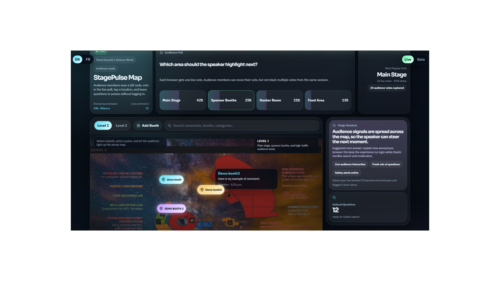

Warm particles and orbital lines build a live stage behind the work.
AI Workflow Services / Kairui Bi
N8N / AI AGENTS / GITHUB / VERCEL
Custom AI agents. Compact web apps.
I help founders, creators, and small businesses turn repetitive research, follow-up, and content work into practical AI workflows.
Built with n8n or focused GitHub + Vercel apps. Small scope, clear function, clean launch.
n8n workflows
GitHub + Vercel
Human review
Fast launch
Services, demos, publication, contact.

Featured visual
StagePulse Map
Real Science World map asset from the 2nd-place hackathon build.

n8n agents
Custom automations for real tasks.

Build style
Compact tools, clear inputs, usable outputs.
Services
What I offer.
Custom AI agent builds through n8n, plus focused GitHub + Vercel web app design and installation.
Approach
One job. Small scope. Clean launch.
Build only what is needed.
I start with one repetitive task, one useful output, and one clean deployment path.
Demos
What I build.
Service packages first. Live examples below.
Custom n8n AI agent
Build one custom AI agent around a real task.
- Map the trigger and output.
- Connect forms, sheets, email, or APIs.
- Keep review in the loop.
Best for: follow-up, research, summaries, and ops.
Local web app design
Design a focused web app around one workflow.
- Build the UI around one clear job.
- Keep the scope small and usable.
- Ship a clean GitHub handoff.
Best for: internal tools, demos, and AI utilities.
GitHub + Vercel install
Set up, deploy, and hand off the app cleanly.
- Prepare the repo, env, and deploy flow.
- Launch on Vercel with simple updates.
- Keep the local setup easy to maintain.
Best for: founders, creators, and small teams shipping fast.
Example builds
These demos show the kind of tools, workflows, and product surfaces I can ship.
Process
How a build usually moves.
I keep the work small, visible, and launchable so a useful result arrives fast without creating a giant AI mess.
Audit first. Build second. Launch cleanly.
The goal is not to automate everything. The goal is to find one repetitive task, shape one reliable output, and make the handoff easy to maintain.
Map the task
We isolate the trigger, the decision point, and the output that actually matters.
Build the smallest useful system
That might be an n8n workflow, a compact web app, or a GitHub + Vercel install around one job.
Keep review visible
The result should stay easy to inspect, edit, and trust after handoff.
AI Agent Thinking
How I think about agents.
I treat agents as scoped workflow systems, not vague magic.
One job first
Good agents should do one clear job well.
Human review stays visible
Outputs should stay easy to check, edit, and trust.
Context matters
Useful systems turn scattered information into usable context.
Launch small
Small, usable systems beat oversized AI promises.
Publication
Research and publication.
I also have a Proc. SPIE publication comparing CNN models and a Swin Transformer for facial expression recognition.
Facial expression recognition model comparison.
MobileNetV2, VGG-16, ResNet, and Swin Transformer compared on FER2013.
- Published in Proceedings of SPIE.
- CNN vs transformer tradeoffs.
- Useful research foundation.
Open the full publication page for the abstract, method, and related demo.
Contact
Contact and booking.
Start with a short audit or send the workflow idea by email.
Good first fit
Research, pre-call prep, follow-up, summaries, and simple AI utilities.
What the audit covers
We map one task and decide if automation is worth building.
Use the booking page for the scheduler.
The booking page uses your Google Appointment Schedule embed, with a direct fallback link.
- Free 15-minute workflow audit.
- One repetitive process mapped into a clear next step.
- Low-risk scope with human review still in the loop.